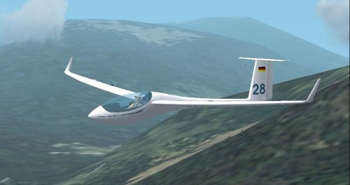

Soaring with FSX >> SimObjects >> UKVGA ASW28
The UKVGA ASW28 updates the original model for FS2002 with FSX instruments and a more accurate flight model. DOWNLOAD HERE
The update was created for the UK Virtual Gliding Association in support of their goal to produce a simple 50km triangle for early cross-country pilots flyable in both FS2004 and FSX. For FSX I wanted to support the standard flightplan and IGC files from sim_logger, so I really didn't want to use a glider with the 'CAISET' dll instruments in FSX effectively dragging it back to FS98. Hence the update to the panel, replacing all the FS98 DLL instruments.

The BLUE knob on the right is the 'Water Ballast Valve': UP = valve closed, DOWN=valve open. CLICK on the knob to toggle open/closed. The ASW28 loads into FSX fully ballasted with water. The small LCD display to the lower right of the ballast valve displays percentage of water ballast carried. Broadly, full water ballast increases the weight of the empty glider by 50%. Modern competition gliders carry jettisonable water ballast (in the wings and sometimes in the vertical stabilizer). The extra weight provided by the water ballast is advantageous if the lift is likely to be strong, and may also be used to adjust the glider's center of mass. Moving the center of mass toward the rear by carrying water in the vertical stabilizer reduces the required down-force from the horizontal stabilizer and the resultant drag from that down-force. Although heavier gliders have a slight disadvantage when climbing in rising air, they achieve a higher speed at any given glide angle. This is an advantage in strong conditions when the gliders spend only little time climbing in thermals. The pilot can jettison the water ballast before it becomes a disadvantage in weaker thermal conditions. Another use of water ballast is to dampen air turbulence such as might be encountered during ridge soaring. To avoid undue stress on the airframe, gliders must jettison any water ballast before landing. (ref wikipedia)

The GREEN knob on the left side of the panel is TRIM, i.e. the 'neutral' setting of the elevator. 'Trim forward' will bias the glider into more of a nose-down attitude and at a neutral stick position the glider will fly faster, and the reverse for 'trim back'. You adjust trim using the default keys in FSX, worth assigning to buttons on your joystick. In general you 'trim forward' while in cruise between thermals, and 'trim back' when you pull up and turn into a thermal. The idea is simply to have the glider settle into the appropriate default speed for the situation without you constantly pulling or pushing on the stick.
The GPS at the top of the panel is as in the stock FSX DG808S except the 'distance to go' reading has been increased in size. This GPS assumes a flightplan is loaded, otherwise its readings are pointless. In the example screenshot the 'distance to go' is 13.5 nautical miles and the GPS is saying 'turn to starboard a bit to head to the next waypoint'. See DG808S manual. The distance-to-go units (miles, km) depends on your FSX setting.
The Winter variometer main needle is displaying Total Energy compensated climb rate. The small red needle is a small 'debug' installation - it shows what the FSX 'VARIOMETER RATE' variable is reading. In default FSX, this red needle will display uncompensated pure climb rate (i.e. FSX never implemented the intended TE reading). CumulusX will force the FSX variable to total energy, and the little red needle will show that. Don't worry about it unless you're an FSX developer and want the quick debug info...
The 'Moving Map' GPS should be fairly obvious and has very limited function - all you can do is zoom in/out using the +/- buttons. The map displays the flightplan and actually I find it easier to navigate to the next waypoint by ensuring the flightplan track drawn on this instrument is vertical than using the '>>' indications on the GPS at the top of the panel.
The variometer with the LCD digital display is probably the most interesting...
The main needle displays NETTO climb rate (i.e. the vertical movement of the air outside the glider). The top numeric display is the expected arrival height AGL at the next waypoint in the flightplan. The middle numeric display (at 3-o-clock on the instrument) is the mcready setting. The bottom numeric display is the climb average. Heights are in feet, climb rates in knots, or meters, meters-pe-second depending on your FSX units settings.
Here's where the flight computer begins to get fancy. The flight computer will attempt to calculate your likely arrival height at the next waypoint. The simulated reading in the FSX ASW28 computer vario is unusually sophisticated in that it gives you arrival height *AGL* (above ground, at the waypoint).
As with the FSX GPS, this indication is meaningless unless you have a sensible flightplan loaded in FSX.
The flight computer has to take into account a variety of factors to come up with a reasonable prediction of your arrival height, assuming a straight glide to the waypoint. These include:
You can view the same 'arrival height' reading either of two ways, which are actually synonymous:
You can use either of these definitions, whichever you're comfortable with.
For an explanation of Total Energy, Netto, Arrival Height, Mcready Setting see wikipedia or I guess ask here at ukvga - these things aren't unique to these ASW28 instruments.
The instruments are ok, probably an improvement on the CAISET, but by far the main motivation was to remove the need to install the Windows 98 / FS98 DLL-based CAISET instruments.
3D glider and cockpit model by Peter Franke, Kris Feldmann.
FSX XML instruments by Ian Forster-Lewis.
Aerodynamic flight model modified by Ian Forster-Lewis from SOAR DG808S created by Ian Forster-Lewis, Peter Luerkens, Bert de Bruin.